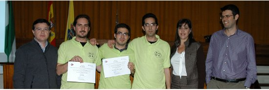
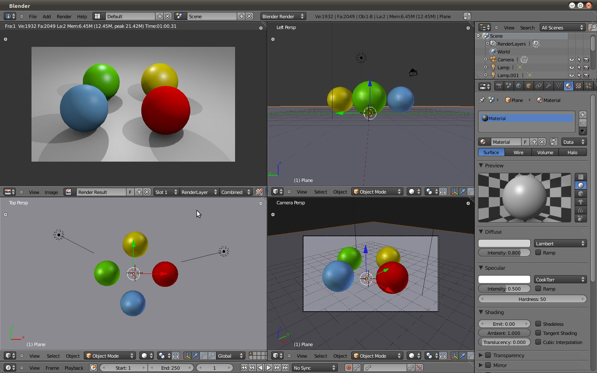

May 9, 2011 · 1 minute read · Comments
Games development
Un pequeño apunte, se acaba de publicar una entrevista que me hicieron en el blog Desarrolladores de videojuegos sobre IberOgre y Sion Tower. Se trata de una comunidad hispanohablante que publica artículos, tutoriales y mucho material relacionado con el desarrollo de videojuegos. Hablamos principalmente sobre la concepción y el desarrollo de mi proyecto actual aunque también tocamos temas como los juegos independientes o la formación. Quiero agradecerle a Epifanio Suárez su tiempo y el espacio que me ha concedido en su página, esto contribuirá a la difusión de IberOgre y Sion Tower.
May 4, 2011 · 1 minute read · Comments
Projects

La Universidad de Cádiz ha publicado la noticia de que IberOgre y Sion Tower es proyecto finalista en el V CUSL que se celebrará en Granada. Desde entonces, muchos otros medios se han hecho eco dándole una mayor difusión al proyecto. No podemos estar más contentos por el apoyo recibido.
El periódico gratuito Viva Cádiz nos dedica la mayor parte de su contraportada (podéis ver la noticia completa más abajo) y aparecemos en la versión digital de Diario Bahía de Cádiz. Son pasos pequeños pero muy importantes para que el proyecto crezca.
Por cierto, me gustaría agradecer formalmente a todos aquellos que nos han felicitado ya sea por correo, twitter u otro medio. La comunidad es básicamente lo que define a IberOgre y Sion Tower. Antes de irme, la enhorabuena a FreePhyloTree que también aparece mencionado en todo momento.
Apr 30, 2011 · 1 minute read · Comments
Games development
Como ya he comentado, mi equipo de trabajo está en el servicio técnico y con la escasa potencia de mi netbook se me hace prácticamente imposible desarrollar Sion Tower. Por tanto, he redirigido mis esfuerzos a IberOgre. Recientemente he publicado un artículo tratando de forma general el subsistema de materiales de Ogre. Espero que os sea útil, a continuación adjunto un pequeño sumario.
- Conceptos básicos: iluminación, color difuso, especular, texturas, shading…
- Materiales: scripts .material, estructura de un material en Ogre.
- Carga y uso de materiales: desde scripts o de forma manual.
- Ejemplo: aplicación interactiva que resume el contenido del artículo.
El sistema de materiales de Ogre es muy complejo y en numerosas ocasiones se hace referencia a la traducción del manual oficial disponible en IberOgre. Como siempre, podéis hacer preguntas, sugerencias o críticas. ¡Dentro de poco habrá más novedades!
Apr 27, 2011 · 2 minute read · Comments
Games development

Se acaban de publicar los finalistas de la fase nacional del V Concurso Universitario de Software Libre y mi sorpresa no ha podido ser mayor cuando he visto a “IberOgre y Sion Tower” en la lista. Todavía estoy un poco en shock pero lo primero que quiero hacer es darle las gracias a todos los que han colaborado con el proyecto, en especial a AJR (arte 3D) y al Estudio Evergreen (BSO). Nos veremos en Granada para la fase final en la que habrá un ciclo de conferencias sobre Software Libre y haré una pequeña exposición.
No me cabe duda de que el punto más fuerte de IberOgre y Sion Tower es la pequeña comunidad de colaboradores que se ha reunido, sin ella no estaría escribiendo este artículo. También puedo mencionar a Alberto Cejas (textos en IberOgre), a Mario Velázquez (traducción del manual) y a un largo etcétera.
Aquí os dejo la lista completa de finalistas, ¡enhorabuena a todos!
- Geo Remind Me, de Raúl Jiménez Ortega y Rubén Dugo Martín de la Universidad de Granada.
- IberOgre y Sion Tower, de David Saltares Márquez de la Universidad de Cádiz.
- JavaDiKt, de Luis Alfonso Arce González de la Universidad de Sevilla.
- Predesys, de José Antonio Jiménez Carmona de la Universidad de Sevilla.
- TP (Terminal Previewer), de Javier Angulo Lucerón de Universidad de Castilla la Mancha.
- Yakito, de Sergio Garcia Mondaray de la Universidad de Castilla la Mancha.
Estas son las menciones especiales, enhorabuena a Aarón, una pena que no hayamos podido hacer doblete gaditano en la final.
- PirannaFS, de Jesús Leganés Combarro de la Universidad Rey Juan Carlos.
- FreePhyloTree, de Aarón Bueno Villares de la Universidad de Cádiz.
- SocialSigh de Miguel Sempere Sánchez de la Universitat D"Alacant.
- Cormoran, de Jaime Gil de Sagredo Luna de la Universidad de Alcalácomo.
Por cierto, para difundir el evento es posible colaborar valorando positivamente la noticia en Menéame o comentándola por Twitter.
¡Nos vemos en Granada!
Apr 26, 2011 · 1 minute read · Comments
ComputingGames development
El pasado día 13 de abril se lanzó la primera versión estable de la línea 2.5 de Blender (2.57), la herramienta de modelado y animación 3D libre por excelencia. Entre sus múltiples mejoras se encuentra el rediseño completo de la interfaz y la nueva API para Python. Es posible descargarlo para Linux desde la web pero lo más cómodo es instalarlo en Ubuntu es a través de un PPA y a continuación explico cómo hacerlo.
- Agregamos el PPA a nuestra lista de repositorios:
sudo add-apt-repository ppa:cheleb/blender-svn
- Actualizamos la lista de paquetes
sudo apt-get update
sudo apt-get install blender
Listo, ya podréis comenzar a trastear con la versión estable de Blender con toda tranquilidad (las betas fallaban más que una escopeta de feria). Los que estuvieran familiarizados con la antigua interfaz no tendrán ningún tipo de problema para adaptarse, todo es más agradable, cómodo y se encuentra completamente a la vista. La ventaja es que los nuevos no saldrán espantados nada más verlo.

Cada vez tengo más ganas de echarle el guante a Blender Game Engine, la nueva API en Python y la sencillez para distribuir aplicaciones compatibles con varias plataformas y carentes de dependencias.
¡A disfrutarlo!